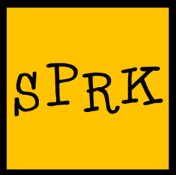

About DMCA
This website is to keep thorough records of Scratch Studio Wars, so that they will never be forgotten.
Click one of the links below to read information on the topic you are looking for:
The April 11 Raid on the Popcorn Uprising
Buriasa
Food Empire of Scratch (FEOS)
The Red Army (MasterX)
South Classified/Imperial Rebels of [Classified] (IROC)
=========================================================================
Inspired by "The Popcorn Museum" by NickNackTheTitaniac